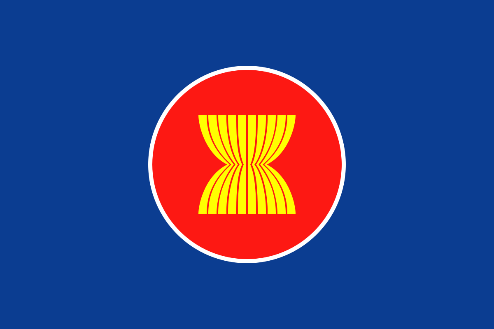

Palestina merupakan sebuah negara yang berasal dari Asia Barat dan tepatnya terletak di antara negara Mesir, Suriah, dan Jazirah Arab. Negara ini memiliki dua bagian yang didasari oleh entitas politik: Wilayah Pendudukan Israel, dimana bagian tersebut dikuasai oleh negara Israel, dan Otoritas Nasional Palestina. Pada tanggal 15 November 1988, dinyatakan oleh Dewan Nasional Palestina dan Organisasi Pembebasan Palestina bahwa negara mereka telah merdeka. Namun demikian, negara ini masih dalam situasi perang dengan Israel, dan yang terbaru timbul tepatnya 7 Oktober 2023.

Bangsa Indonesia dan Palestina memiliki kerjasama internasional yang dapat dikatakan sangat baik dan erat. Pada tahun 2018, presiden Indonesia menandatangani peraturan mengenai “Pengesahan Memorandum Saling Pengertian Antara Pemerintah Republik Indonesia dengan Pemerintah Negara Palestina Tentang Fasilitas Perdagangan untuk Produk Tertentu yang Berasal dari Wilayah Palestina.” Kepastian ini dapat dilihat melalui link berikut, yakni www.setneg.go.id, yang merupakan situs resmi Kementerian Sekretariat.
Perjanjian ini meningkatkan persahabatan dan rasa persaudaraan antara kedua negara. Pada saat ini, Indonesia tetap menjalin hubungan yang baik dan solid. Indonesia mendukung negara Palestina dalam berbagai aspek–aspek, seperti dalam perdagangan, kehidupan sosial, perekonomian, dan tentunya kemerdekaan negara tersebut. Oleh karena itu, bila dikaitkan dengan 17 tujuan SDGs atau Sustainable Development Goals, Indonesia membantu negara Palestina dengan melaksanakan tujuan ketiga, yaitu “Kehidupan Sehat dan Sejahtera.”
Pada tahun 2024, tepatnya pada hari Selasa tanggal 11 Juni, Bapak Prabowo Subianto menyampaikan beberapa gagasan sebagai komitmen Indonesia untuk membantu dan mendukung negara Palestina. Di antara gagasan–gagasan tersebut, kesehatan dan peningkatan tenaga medis merupakan salah satu pusat perhatian.
Beliau mengatakan bahwa bangsa Indonesia akan mengirimkan persediaan medis dan tim medis, disertakan dengan pembangunan rumah sakit di Gaza. Kemudian, pernyataan bahwa Indonesia siap dan sedia untuk menerima pasien dari Gaza untuk dirawat juga dinyatakan.
Apabila pasien–pasien tersebut sudah sembuh dan situasi di Palestina kembali menjadi normal, mereka diberi kebebasan untuk berpulang ke negara mereka. Maka dari itu itu, dapat ditekankan bahwa kerjasama antara bangsa Indonesia dan Palestina berjalan dengan sangat lancar dan penuh dukungan dari kedua negara.
Melalui pengertian–pengertian dari yang sebelumnya, dapat dijelaskan kembali bahwa bahwa Indonesia bekerjasama dengan Palestina dan membantu untuk meningkatkan kesejahteraan negaranya, terutama dalam bidang kesehatan, adalah sebagai berikut:
1. Indonesia berperan aktif dalam membangunkan rumah sakit dan meningkatkan fasilitas kesehatan di Gaza. Salah satu contoh konkret dapat dilihat melalui pendirian rumah sakit Indonesia yang berada di Gaza yang telah dikelola oleh MER–C atau Medical Emergency Rescue.
2. Lalu, Indonesia secara rutin mengirimkan tim medis untuk membantu orang–orang yang memerlukannya di negara Palestina. Berbagai macam obat–obatan dan peralatan kesehatan dipersiapkan untuk menolong masyarakat secara keseluruhan. Ini tentunya meningkatkan persatuan dan ikatan baik yang telah dijalankan oleh negara Indonesia bersama dengan Palestina.
ASEAN atau Association of Southeast Asian Nations adalah sebuah organisasi geopolitik dan ekonomi, dimana anggota–anggotanya merupakan negara yang berasal dari Asia Tenggara. ASEAN pertama kali diciptakan pada tanggal 8 Agustus, 1967 dengan menandatangani deklarasi Bangkok di negara Thailand. Pada saat itu, hanya ada 5 negara yang mendirikan organisasi ini, yakni Indonesia, Filipina, Malaysia, Thailand, dan Singapura. Seiring berjalannya waktu, anggota dalam ASEAN mulai bertambah, sehingga kini, terdapat 11 negara berbeda di dalamnya, termasuk Timor–Leste.
Di dalam ASEAN, Indonesia memiliki peran yang penting dalam mempromosikan kerjasama dan stabilitas regional. Berdasarkan informasi yang telah mampu untuk dikumpulkan, Indonesia berhasil dalam menjadi penggerak utama dalam memajukan dan mengembangkan kemampuan ASEAN di dalam berbagai bidang, seperti ekonomi, perdagangan internasional, dan solusi konflik. Akan tetapi, tentunya organisasi ini saling membantu dalam mensejahterakan negara masing–masing dan sesama dalam bidang kesehatan.
Dengan melihat hasil dari KTT ASEAN ke–43, ada beberapa poin penting yang dapat diambil mengenai pembahasan atau topik pelayanan kesehatan yang dapat dikaitkan dengan SDGs nomor 3. Poin–poin yang penting tersebut adalah pertama, pembangunan sumber daya manusia dan arsitektur kesehatan regional perlu ditingkatkan, dan hal–hal lain yang berkaitan dengan masalah tersebut. Alasan mengenai poin tersebut adalah karena perubahan cuaca dan isu kesehatan lain dapat memicu penyakit atau virus yang tidak diinginkan. Kedua, ASEAN menganjurkan “One Health”, kerjasama bagi manusia dan terhadap makhluk hidup yang lainnya. Pelayanan kesehatan dan persediaan medis maksimal merupakan sesuatu yang masih bisa dikembangkan.

Komitmen yang kuat untuk memajukan tingkat pelayanan kesehatan dan persediaan medis, seperti obat–obatan dan vaksinasi merupakan sesuatu yang sangat penting untuk diperhatikan juga. ASEAN melihat dan mengakui persoalan ini, sehingga mereka menekankan bagaimana hal seperti ini sangat penting untuk ikut berkolaborasi dengan menteri kesehatan dan keuangan. Ini dapat meningkatkan persediaan rumah sakit dan pembangunan pelayanan kesehatan untuk masyarakat bukan hanya di dalam Indonesia, tetapi di seluruh kawasan Asia Tenggara. Para warga berharap bahwa melalui KTT ASEAN ke–43 ini, semua bisa terlaksana dengan lancar dan keperluan masyarakat mengenai kesehatan dapat terpenuhi dengan baik.
Perserikatan Bangsa–Bangsa merupakan sebuah organisasi internasional yang mendorong pelaksanaan kerjasama internasional. PBB ini didirikan pada tanggal 24 Oktober 1945 setelah terjadinya Perang Dunia ke–II untuk mencegah hal semacam itu terulang lagi melalui penciptaan lingkungan yang damai dan tentram, serta meminimalisir konflik yang terjadi. Sebelumnya, PBB hanya memiliki 51 negara sebagai anggotanya, seperti Inggris, Perancis, dan lain sebagainya. Akan tetapi, PBB terus berkembang hingga pada saat ini, mereka terdiri dari 193 negara anggota.
Indonesia memiliki peran dalam lingkup organisasi yang besar ini dalam berbagai hal. Tentunya, bangsa Indonesia berperan aktif terhadap keberlangsungan PBB. Beberapa peran Indonesia adalah sebagai berikut:
1. Mewujudkan dan menyebarkan kedamaian dalam dunia melalui kerjasama dengan berbagai organisasi lainnya, seperti Asia Afrika dan ASEAN, berdasarkan kemerdekaan, perdamaian abadi, keadilan sosial, dan lain–lain.
2. Pengiriman PKD ke Indonesia dari PBB yang menunjukkan bahwa Indonesia merupakan negara yang damai dan penuh cinta. Dengan melihat pengiriman ini, PBB menetapkan komitmennya terhadap bangsa Indonesia bahwa bangsa ini menjunjung tinggi rasa kedamaian, serta cinta dan belas kasih.
3. Indonesia juga berperan aktif dalam menyelesaikan konflik yang terjadi di salah satu negara di Asia Tenggara yang lain, yakni Kamboja, pada bulan Juli 1988.
Beberapa tahun yang lalu, Indonesia dan kantor PBB memperkuat kerjasama mereka dalam menangani risiko bencana dan menguranginya. Menteri Kesehatan RI berkata bahwa bencana seringkali menimbulkan isu–isu yang relevan yang berdampak terhadap kesehatan manusia secara keseluruhan. Maka dari itu, disampaikan juga bahwa kementerian kesehatan akan membuat sebuah pusat krisis kesehatan yang akan membantu untuk mencegah penyebaran virus, bakteri, atau penyakit lain yang tidak diinginkan.
SRSG Mizutori juga meningkatkan kerjasamanya dengan Indonesia dalam masalah ini. Mereka memiliki sudut pandang yang sama bahwa masalah kesehatan memiliki peran yang penting dalam persoalan mengenai bencana–bencana atau fenomena alam.
Oleh karena itu, dampak yang akan terjadi bagi masyarakat melalui tiga macam kerjasama ini adalah menciptakan dunia yang lebih sehat dan bebas dari penyakit. Alasannya adalah karena dengan memperhatikan dan menerapkan kepentingan dari tujuan ke–3 SDGs, kerjasama internasional antar negara atau organisasi akan semakin meningkat, dan pelayanan kesehatan di dunia akan semakin berkembang. Di berbagai negara yang ikut serta dalam kerjasama ini akan memiliki fasilitas kesehatan yang lebih baik dan layak bagi masyarakatnya. Pelayan tim medis beserta dengan alat–alat medis, seperti obat–obatan atau vaksinasi, akan menjadi semakin lengkap seiring berjalannya waktu karena setiap negara yang berpartisipasi untuk menyelesaikan masalah terkait dengan kesehatan saling melengkapi satu dengan yang lainnya.
Ini akan menyebabkan dampak atau pengaruh yang positif bagi masa depan, terutama karena kesehatan warga dalam berbagai negara tentunya akan meningkat secara drastis. Melalui perbaikan dalam fasilitas kesehatan dan pelayanan kesehatan yang diberikan, masyarakat dapat menjadi lebih sejahtera karena kebutuhan kehidupan sehari–hari semakin terpenuhi seiring berjalannya waktu. Maka dari itu, kerjasama seperti ini dapat dikaitkan dengan salah satu nilai–nilai Pancasila, yaitu kemanusiaan.
Kemanusiaan yang dimaksud dalam hal ini merupakan sikap universal cara untuk memandang setiap manusia yang wajib dimiliki oleh setiap individu karena setiap manusia di dunia harus melindungi dan memperlakukan manusia sesuai dengan hakikatnya. Meskipun SDGs nomor 3 fokus tentang masalah kesejahteraan dari kesehatan, tetapi apabila manusia saling peduli satu dengan yang lainnya, tentunya akan dapat menciptakan lingkungan yang lebih sehat dan berkembang dalam fasilitas kesehatan atau pelayanannya.